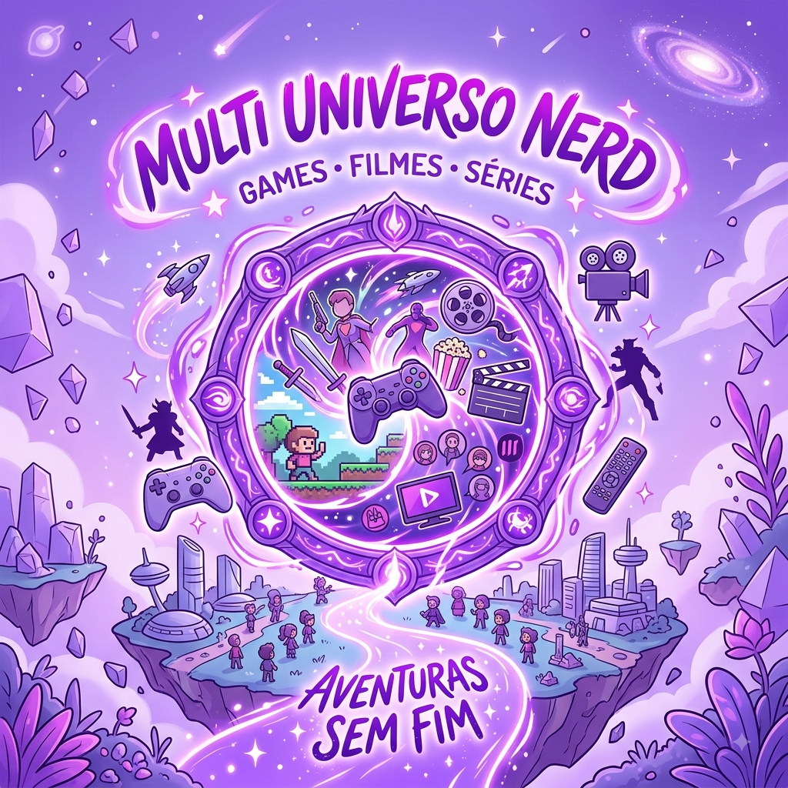
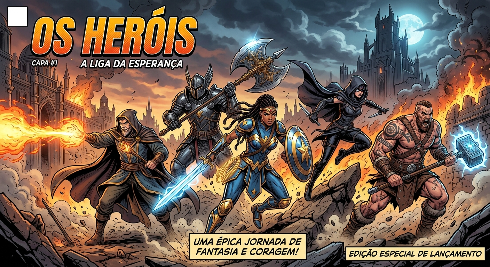

The first post
Aqui você encontra jogos,filmes,series e um mundo de fantasias.
By: Mariana Rodrigues
Bem-vindo a um universo cheio de nerdisses!!

Aqui você encontra jogos,filmes,series e um mundo de fantasias.
By: Mariana Rodrigues

Se você segue a ordem cronológica oficial do Universo Cinematográfico Marvel (MCU), sabe que tudo começa com Capitão América: O Primeiro Vingador, ambientado na década de 1940. Porém, o primeiríssimo herói da Marvel a aparecer nas telas nessa linha do tempo não foi o Steve Rogers... foi o Tocha Humana original! Como assim? Durante a cena da Stark Expo de 1943, quando Steve Rogers e Bucky Barnes estão passeando pelo pavilhão de invenções, a câmera passa rapidamente por um tubo de vidro que contém um manequim em um traje vermelho. • O segredo: A placa do mostruário diz "The Synthetic Man" (O Homem Sintético). Trata-se de Jim Hammond, o Tocha Humana original dos quadrinhos da década de 1930 e 1940 (que não tem relação com o Johnny Storm do Quarteto Fantástico). • Por que isso importa? Nos quadrinhos, Jim Hammond foi o primeiro herói oficial da editora (quando ela ainda se chamava Timely Comics em 1939).
By: Mariana Rodrigues